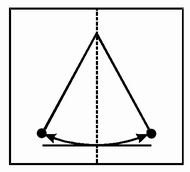
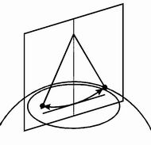

|

| |
El ignorado señor del péndulo, y su péndulo
Como parte de las actividades de Buenos Aires Piensa la Facultad de Ciencias
Exactas y Naturales construyó un péndulo de Foucault de 27 metros de altura.
Jean-Bernard-Léon Foucault, no Michel, nació en 1819 en París, donde vivió hasta
1868. Adquirió gran fama por la invención del péndulo que lleva su nombre, que
fue la primera demostración experimental de la rotación de la Tierra, hecho del
que nadie dudaba en aquella época, pero para el que tampoco nadie encontraba un experimento
decisivo.
Foucault lo descubrió por casualidad: trabajaba en su torno
con una varilla metálica de aproximadamente un metro de largo cuando, por accidente,
la punta de la varilla comenzó a vibrar en una dirección. Al hacer girar el mandril
que sujetaba la varilla, la dirección de la vibración en la otra punta no rotaba:
se mantenía indiferente al giro del torno que la amordazaba. En un salto en largo
imaginario Foucault indujo correctamente que la oscilación de un péndulo también
sería independiente del movimiento de rotación del punto de sujeción al techo
y, a los pocos días, el 8 de enero de 1851, lo comprobó en su propio taller con
una masa de 5 kg. y un hilo de 2 metros de largo. El péndulo oscilaba, y la dirección
del vaivén giraba lentamente a lo largo del día. Pero el perezoso viraje del plano
de oscilación del péndulo no era otra cosa que una ilusión de los observadores
parados en el mundo e incapaces de percibir su propia rotación junto con la Tierra.
En febrero fue invitado a reproducir la experiencia en el Observatorio
de París, esta vez con un péndulo de 11 metros de largo y una masa de 28 kg. En
esa ocasión Foucault afirmó que el giro aparente del plano de oscilación describiría
una vuelta completa por día en los polos, mientras que iría disminuyendo según
el seno de la latitud hasta hacerse nulo en el ecuador.
Ese mismo año
se decidió hacer una demostración pública, esta vez bajo la cúpula del Panteón,
con una altura de 67 metros y un período de 16 segundos. Un estilo colocado bajo
la esfera trazaba marcas sobre arena húmeda ante el asombro de los ciudadanos
parisinos, que acudieron en masa respondiendo a la consigna "venga a ver cómo gira
el Mundo". El péndulo necesitaba un nuevo impulso cada 5 o 6 horas, pero durante
ese tiempo el plano ya había girado entre 60 y 70 grados en sentido horario, como
era de esperar.
El ignorado señor
Pese a la fama lograda por
este descubrimiento, los aportes de Foucault a la ciencia y la tecnología son
tan ignorados como relevantes. Por ejemplo, preocupado por la demostración de
la fórmula del seno (que pese a sus esfuerzos no logró derivar), se abocó al diseño
de un instrumento capaz de comprobar la rotación de la Tierra y que fuera independiente
de la latitud. Y lo logró: inventó el giróscopo, que consiste en una rueda giratoria
cuyo eje se mantiene libre e indiferente de cualquier movimiento exterior. Pocos
advierten que el giróscopo es la base de la navegación aeroespacial, sin cuyo auxilio
no se hubiera podido desarrollar.
Otros logros importantes fueron la medición
de la distancia al Sol y la velocidad de la luz en el aire y en el agua, con una
precisión mayor a la lograda hasta entonces. Pero la más sustancial contribución
a la ciencia la hizo al desarrollar un método de control de superficies espejadas
que permitió construir telescopios de gran tamaño. Con la asistencia de estos
nuevos telescopios, desde uno de 80 centímetros de diámetro que él mismo construyó
hasta los gigantes de varios metros que empezaron a aparecer por todo el mundo,
la astronomía y el conocimiento del universo pegaron un salto escalofriante. La
tecnología moderna -con láser e interferencia- tardó más de cien años en superar
la ingeniosa técnica de cortar sombras con una cuchilla que ideó Foucault y que
los astrónomos aficionados siguen utilizando.
Colgados del universo
En la Facultad de Ciencias Exactas y Naturales de la UBA el plan de construir
un péndulo de Foucault tiene no menos de 10 años. Sin embargo, la movida de Buenos
Aires Piensa le dio el impulso definitivo. Trabajaron docentes, estudiantes, y
también empleados no docentes de la Facultad. Hoy se lo puede ver mecerse sin
apuro mientras cuelga del techo del pabellón II de Ciudad Universitaria a 27 metros
del piso. En ir y venir tarda un poco más de 10 segundos: para un péndulo, una
eternidad. La esfera pesa 26 kilogramos y se desplaza sobre una tarima que permite
visualizar la rotación de la Tierra a 8,5 grados por hora. Nadie pasa cerca sin
quedar momentánemente hipnotizado. Poco a poco, oscilación tras oscilación, van
cayendo en la cuenta de lo que el péndulo cuenta. Y no hay quien no se estremezca.
La fuerza atractiva del péndulo radica posiblemente en la sencillez del
experimento, y en su serena elegancia. Pero lo cierto es que desde su creación
se ha convertido en un ícono de la ciencia, un símbolo del pensamiento racional,
un emblema que nos conecta con las leyes del universo. | | | | Cómo
funciona | | 
|
| El
péndulo oscila, y el movimiento -tanto de la masa como del hilo- queda atrapado,
incluido en un plano vertical e inmóvil. |
 | | El
péndulo y su plano de oscilación en perspectiva. | |  | | En
este esquema la perspectiva incluye a la Tierra. |  |
| La
Tierra no está inmóvil, sino que gira dando una vuelta completa
cada 24 horas. El péndulo, en cambio, permanece en su plano de oscilación
inmóvil. Un observador común y corriente no es capaz de percibir
el movimiento de rotación de la Tierra; en vez de eso, le parece que lo que
gira es el plano de oscilación del péndulo. |
| | | |
| | |
| | |
Cómo
funciona
La consulta (o protesta) más habitual cuando un visitante se
acerca al péndulo es: ¿por qué el plano de oscilación no gira, por qué se queda
quieto (si es que se queda quieto), y nos permite percibir la rotación de la Tierra?
Generalmente ante semejante duda no queda otro remedio que tomar una pequeña plomadita
e improvisar un péndulo de Foucault en miniatura. Ante los ojos sorprendidos del
visitante, aunque la persona que sostiene el péndulo comience a girar, el plano
de oscilación se mantiene invariante. Incluso mientras la plomada oscila hacemos
rotar el hilo rápidamente varias vueltas (deslizando una mano sobre otra se consigue
fácilmente). Ahora la plomada gira como un trompo, para un lado y para el otro...
pero no hay vuelta: el plano de oscilación permanece quieto, indiferente. -Macanudo -dice ahora el visitante-, ahora le creo. Aunque el techo gira con la Tierra y
hace girar la cuerda del péndulo, el plano de oscilación se queda quieto. OK.
¡Pero por qué hace eso! -Créame, mi amigo. Nadie lo sabe. No tenemos respuesta
para esa pregunta. Sabemos que el universo obra de esa manera, y a ese comportamiento
lo llamamos "principio de inercia". Creemos que no puede deducirse de verdades
anteriores, por eso lo llamamos "principio". |
| |
|
|
Artículo
publicado en la revista EXACTAmente. Algunos derechos reservados.
Se permite su reproducción citando la fuente. Última actualización jun-06. Buenos Aires, Argentina. |
| |
|
|
 |
|